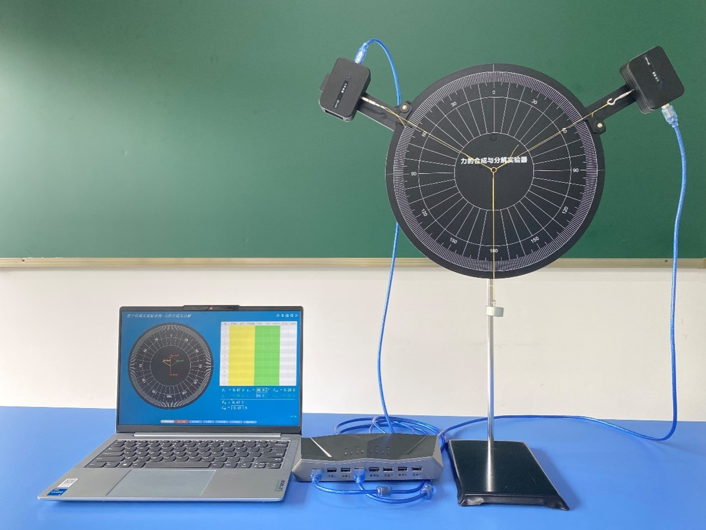
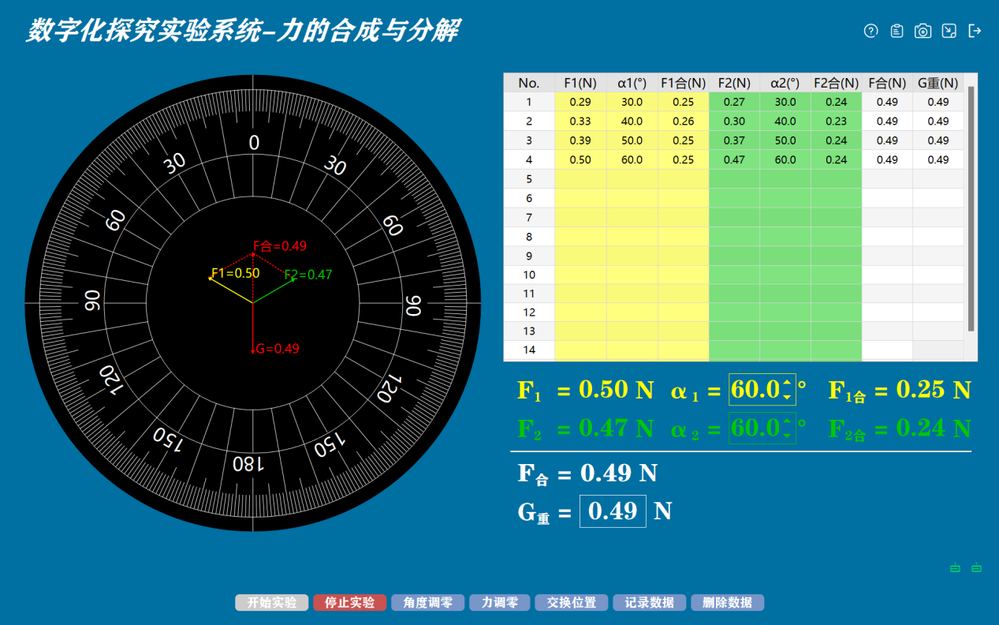

实验二 力的合成与分解
【实验目的】
研究合力和两个分力的关系。
【实验原理】
用一个力等效地代替两个或两个以上作用在同一物体上或同一质点上的力；这一个力称为原力系的合力，而原力系中的任一力称为这个合力的分力。
【实验器材】
力的合成与分解实验器、数据采集器、2个力传感器、钩码一盒、连接套件、铁架台、计算机等。
【实验装置图】

【实验操作步骤】
1.搭建实验环境，将力的合成与分解实验器固定在铁架台上和将两个力传感器安装到实验器两个旋臂上，两个旋臂可调节角度，并分别将两个旋臂指针对齐刻度线30。注意要使力传感器的测量钩与实验器上的刻度线对齐；
2.连接好数据采集器和力传感器，打开力的合成与分解软件。点击“力调零”，在弹出的窗口中，将“请选择需要调零的传感器”设置为F1，并点击“OK”，同理将传感器F2调零，注意调零时不要挂砝码；
3.将50g的砝码挂上去；
4.分别将α1、α2设置为30°，并点击“开始实验”，实验过程砝码可能会晃动，待砝码停止晃动。然后点击“记录数据”，得到第一组数据；
5.依次调节两个旋臂，使其分别对齐刻度线40°，重复步骤4，得到第二组数据；同理得到50°、60°时的数据，
6.发现不同角度两个分力和重力都满足平行四边形法则。改用重量不同的钩码，重复上面的实验步骤。看看是否满足平行四边形法则？软件一开始默认砝码质量为50g，所以当砝码质量不为50g时，开始实验前应点击“G重”旁边的方框，然后在弹出的窗口中输入对应砝码的质量。

【自由探究】
1.根据实验中各组数据对应的分力、合力大小以及它们的方向做出分力、合力的图示，看它们是否满足平行四边形法则。
2.将力矩盘固定，调整两传感器固定臂之间的夹角，记录两分力夹角不同时力传感器的读数和分力、合力的方向，做出分力、合力的图示，看它们是否满足平行四边形法则。